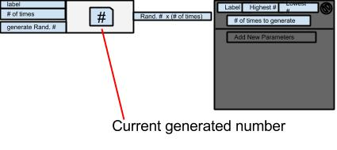

Random Numbers Generator
This component gives the user the ability to make multiple random number generators. It received data on how many rolls it should make, a variable for what type of roll it should make according to the authors pre-set plan and then looks for a signal to make that roll.
Listener Channels
-
Set label: listens for a channel that tells it which type of roll to make.
-
Add more rolls: listens to a channel to tell it how many rolls it should make at once.
-
Generate number(s): listens to a channel that signals it to generate a random number.
Output Channels
-
Output new value(s): outputs the random number generated and how many times it gets generated out in integer form.
The default settings:
- label = 1
- highest # = 2
- lowest # = 1
- # of times to generate = 1
